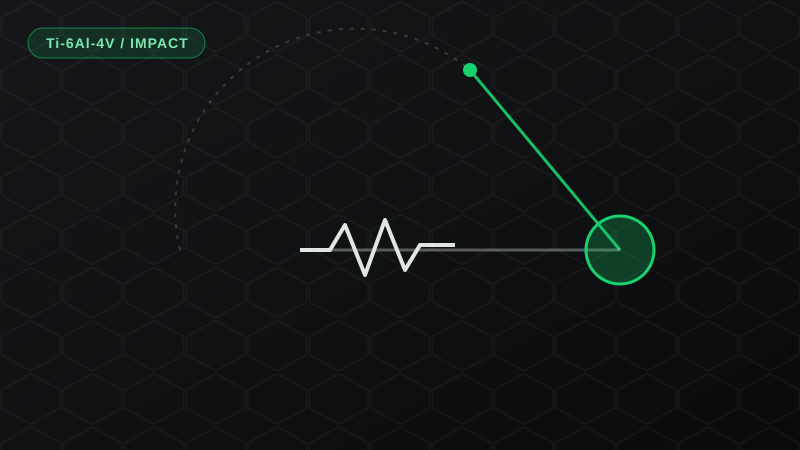
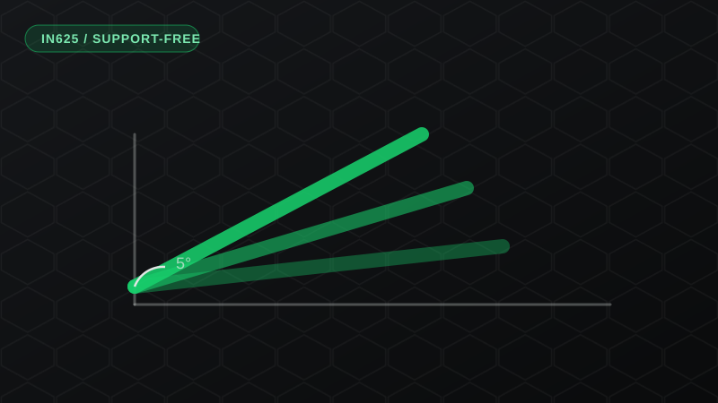
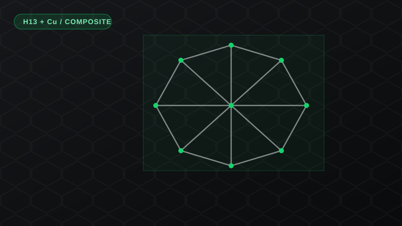
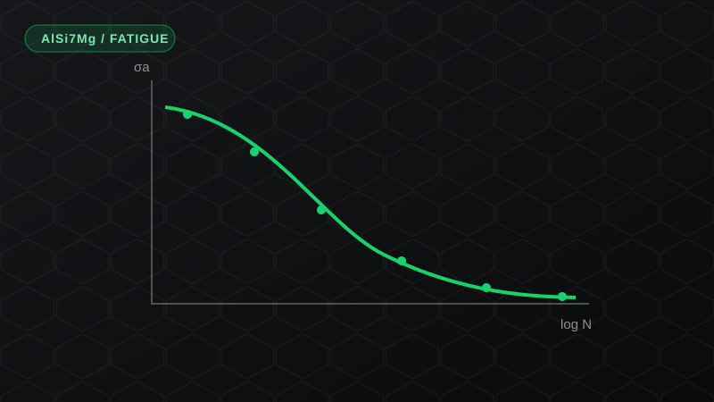
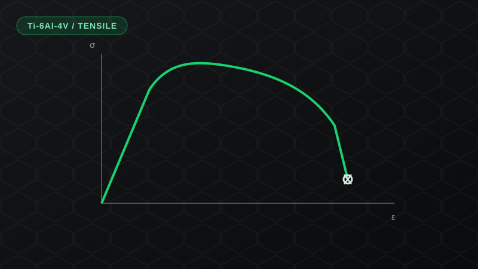
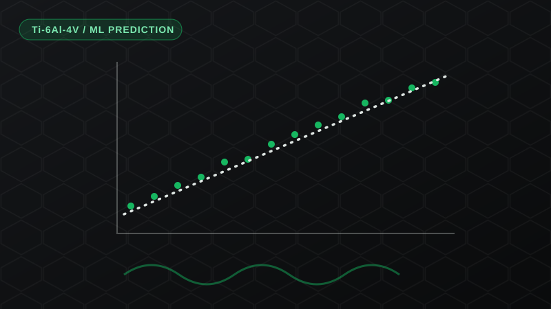
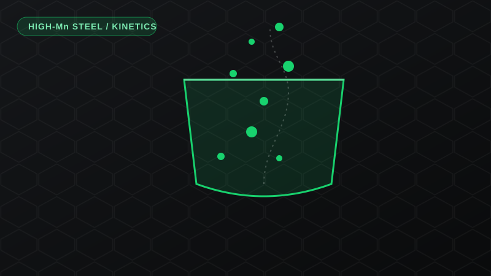
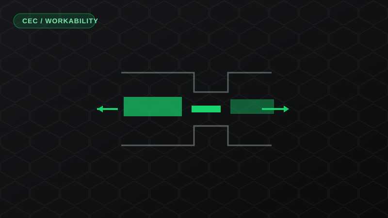
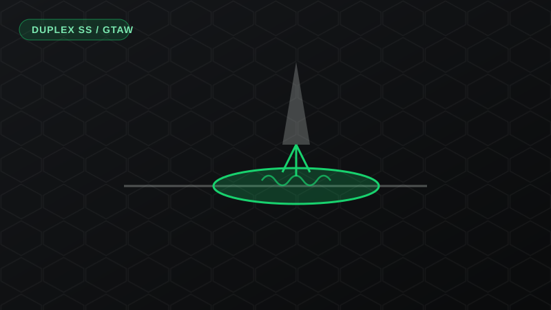

Research & Publications
Peer-reviewed work and research projects on laser powder bed fusion of titanium, nickel, aluminium, and steel alloys, covering fatigue and impact behaviour, tensile response, defect and porosity analysis, support-free fabrication, and machine-learning prediction.
- All
- Titanium
- Nickel
- Aluminium
- Steel
- Machine Learning
- Thesis

Impact Properties of Unnotched Ti-6Al-4V Subsize Charpy Specimens
Instrumented Charpy testing on unnotched subsize LPBF specimens, separating initiation and propagation energy for mill-annealed versus HIP microstructures, and examining the effect of elemental tungsten inclusions.

Support-Free Fabrication of IN625 Low-Angle Overhang Structures
Overhang bars printed down to 5° at 30 µm layers, with residual-stress and geometry analysis against supported builds to validate producibility of complex structural geometries.

Tailorable Compressive Properties of H13/Cu Interpenetrating Phase Composite
Octet-truss H13 tool-steel lattices printed by LPBF and then pressureless Cu-infiltrated, with compressive behaviour tuned through designed volume fraction and characterized using µCT.

Thin-Wall AlSi7Mg LPBF Coupons under Extreme Low Cycle Fatigue
Fatigue and fracture behaviour of thin-wall LPBF AlSi7Mg under extreme low-cycle loading, comparing as-built, stress-relieved, and machined surface conditions.

Tensile Behaviour of Meso-Scale Ti-6Al-4V Thin-Wall Samples
How porosity, surface roughness (as-built, ground, machined), and elemental tungsten inclusions govern the tensile response of mill-annealed and HIP thin walls.

Flexural Bending Fatigue of Thin-Wall Ti-6Al-4V + Machine Learning Prediction
Fully-reversed flexural fatigue of 0.1–0.4 mm thin walls (mill-annealed and HIP), with ML models predicting cycles to failure and ranking the controlling factors.

Kinetic Modelling of High Manganese Steel in the LMF Process
Kinetic model for nucleation and growth of oxide, sulphide, and nitride inclusions in liquid high-Mn steel, coupled to a Thermo-Calc / FactSage slag-metal thermodynamic model and validated against plant data.

Cyclic Extrusion and Compression to Improve Workability and Properties
Undergraduate thesis showing that cyclic extrusion and compression processing significantly improves workability and physical properties, verified by mechanical and microstructural characterization.

GTAW of Hyper Duplex Stainless Steel and Corrosion at the Weldment
Co-op research on weld-edge geometry and GTAW parameters for hyper duplex stainless steel, proposing an optimized heat input that lowered corrosion rate and welding speed at the weldment region.